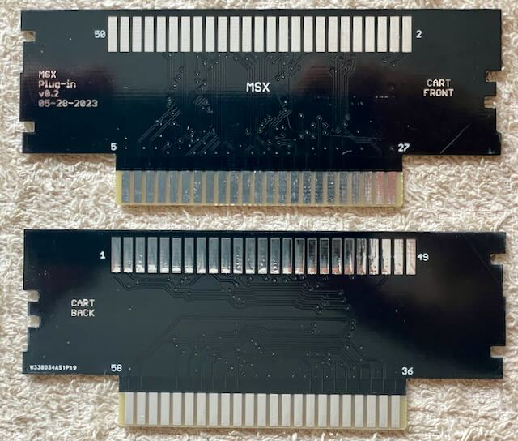
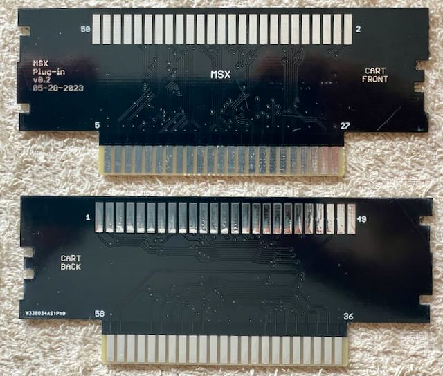
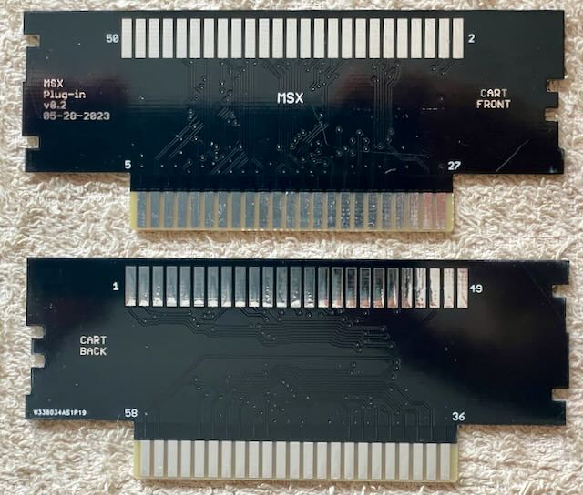

Mit diesem Adapter kann man MSX Module mit dem Open Source Card Reader auslesen.
Da der Adapter in die SNES Buchse passen soll, ist die Platine 1.2" dick.
Vorsicht: MSX Module passen nicht in normale 2x25 Edge Buchse, da die Ränder zu breit sind.

| Komponente | Anzahl | Preis | Anbieter |
| Platine | 1 | €1.00 | |
| MSX Modul Buchse | 1 | — | |
| nur Platine | €1.00 |